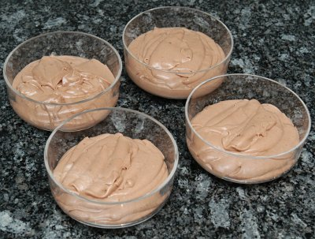

| Zutaten für 4 Personen: | |
| 100 g | Dunkle Schokolade |
| 2 El | Zucker |
| 2,5 El | Maizena |
| 1 Tl | Vanillezucker |
| 5 dl | Milch |
| 1,5 dl | Rahm |
Brich die Schokolade in kleine Stücke und gib sie und den Zucker in eine Schüssel. Stelle die Schüssel auf die Seite.
Gib Maizena und Vanillezucker in die Pfanne. Giesse etwa 1 dl Milch dazu und verrühre alles sehr gut.
Giesse die übrige Milch dazu und koche alles auf. Rühre immer. Wenn es kocht, rühre eine Minute weiter.
Die Creme wird dick. Rühre so, dass Du den Pfannenboden spürst, sonst brennt die Creme an!
Ziehe die Pfanne von der Platte. Gib die Schokolade mit dem Zucker in die heisse Milch. Rühre bis alles gut geschmolzen ist.
Giesse die Creme in die Schüssel. Wenn sie nicht mehr dampft, stelle sie zugedeckt in den Kühlschrank.
Schlage den Rahm steif, rühre die kalte Creme nochmals gut durch.
Mische ungefähr die Hälfte vom Rahm mit dem Gummischaber sorgfältig darunter.
Anrichten: Gib die Creme in eine schöne Schüssel. Mit dem übrigen Schlagrahm kannst Du verzieren.
Trick: Die Creme kühlt schneller ab, wenn Du die Schüssel in kaltes Wasser stellst. Ab und zu umrühren.
Betty Bossi Rezept für Kinder.
Ein simples Rezept für eine gute Schokoladencreme. Reini meinte die vom Stalder sei besser. Mag sein, dass er recht hat. Diese ist aber einfach und wenn man aufpasst mit dem Vanillezucker (meiner hatte kleine Vanillekörner) und mit den Klümpchen vom Maizena dann kommt es auch recht. RE 4.3.2010
@LINKBACK_TAG@ @WAKELOCK@